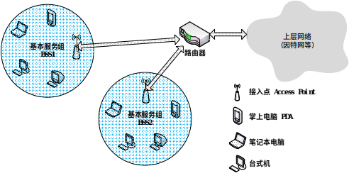
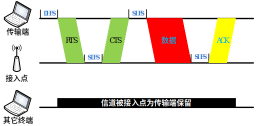
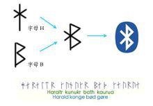
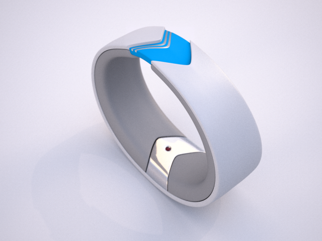
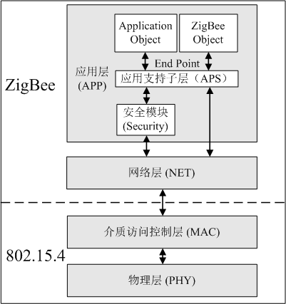
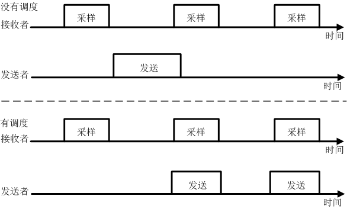
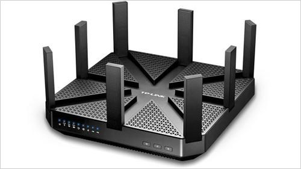
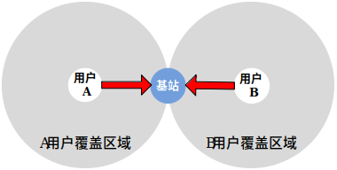

无线网络接入技术¶
从上世纪90年代起，随着网络技术的普及与发展，互联网渐渐成为人类生活和工作中最主要也是最重要的信息交互平台，例如百度、Google搜索引擎，淘宝、eBay网上购物，优酷、YouTube在线视频分享等重要网络应用已经与人们的日常生活密不可分。移动手机的接入也逐步已经超越了传统的PC接入数量。对于物联网的到来，物联网的设备接入将会进一步极大的增大连接的数量。因此，如何将大量的物联网设备连接入网将是物联网中要解决的第一个重要问题。如何解决物联网中“最后一公里”难题，如何将物联网设备稳定、高速地接入物联网中首要解决的问题。
物联网的接入既可以使用已有的接入技术，包括已有的有线和无线（WiFi）的接入技术，同时物联网应用也有新的特点，也产生了很多新的无线连接方式。下面我们就先来介绍常见的物联网设备的连接方式，这些也是大家在进行物联网设计和物联网设备接入的时候可以首先考虑的连接技术。同时，我们也投过现象看到本质，了解这一系列接入技术背后的基本原理。这一部分中，我们主要介绍物联网无线接入技术。无线网络消除了有线网络对接入设备的位置限制，同时也节省了相应的光纤、电缆等有线传输设施的成。 物联网要做到世界上任何物体皆有址可循，大到油轮、火车、飞机，小到温度\湿度\压力传感器、微处理器、微控制器都将被连成一个整体，从而有效地将物理世界和信息世界连接起来，从信息的采集与处理，到决策的制定和执行均需要在网络中高效、准确地完成，移动设备之间的直接互联固然重要，而可靠、方便快捷的信息传输手段和覆盖范围较广无线网络也势必扮演重要的角色。
1. 无线网络接入技术简介¶
1.1. 基本组成元素¶
无线网络包含了一系列无线通讯协议。例如Wi-Fi（Wireless Fidelity） 、WiMAX（Worldwide Interoperability for Microwave Access）和3G协议等。为了更准确地区别不同协议的特性，我们要先明确一些组成无线网络的基本元素：
- (1) 无线网络节点 无线网络节点是指具备无线通讯能力，并可将无线通讯信号转化为有效信息的终端设备。例如：装有Wi-Fi无线模块的台式机、笔记本电脑或PDA，装有3G通讯模块的手机和装有CC2420无线通讯模块的传感器。
- (2) 无线连接 无线连接是指无线网络用户与基站或者无线网络用户之间用以传输数据的通路。相对于有线网络中的电缆、光缆、同轴双股线等物理实体连接介质，无线连接主要通过无线电波、光波或声波作为传输载体。不同无线连接技术提供了不同的数据传输速率和传输距离。
- (3) 基站 基站事实上也是一个无线网络节点甚至用户，它的特殊性在于它的职责是将一些无线网络用户连接到更大网络（一般称为公网，比如校园网、因特网或者电话网），所以一般认为基站是能与公网以较高带宽直接交换数据的“超级”节点。无线网络用户通过基站接收和发送数据包，基站将用户的数据包转发给它所属的上层网络，并将上层网络的数据包转发给指定的无线网络用户。根据不同的无线连接协议，相应基站的名称和覆盖范围是不同的，例如：Wi-Fi的基站被称为接入点（Access Point），它的覆盖范围一般是几十米；蜂窝电话网的基站被称为蜂窝塔（Cell Tower），在城市中它的覆盖范围约为几公里，而在空旷的平地中其覆盖范围可达到几十公里。只有在基站的覆盖范围内，用户才可能通过它进行数据交互【1】。
这里值得注意的是，无线用户除了通过基站接入网络的有中心结构模式（Infrastructure Mode），还可以通过无中心（Infrastructureless Mode）自组织的方式形成自组网（Ad-hoc Networks）。它的特点是无需基站和上层网络支持，用户自身具备网络地址指派、路由选择以及类似域名解析等功能。例如：无线传感器网络就是一种典型的自组网。在无线传感网络中，每个传感器都有一个独一无二的标识符（ID），且每个传感器既是数据的产生者，也是数据的转发者，可以认为是无线领域的对等网（Peer-to-Peer）。
2. WiFi：无线局域网¶
如今无线局域网WiFi是人们日常生活中访问因特网的重要手段之一，它可以通过一个或多个体积很小的接入点，为一定区域内的（家庭、校园、餐厅、机场等）众多用户提供因特网访问服务。在IEEE为无线局域网制定IEEE 802.11规范之前，存在许多不同的无线局域网标准，这样的缺点是用户在A区域（例如餐厅）上网需要在电脑上安装一种类型的网卡，当他回到B区域（例如办公室）则需要为电脑更换另一种类型的网卡。除了浪费时间和硬件成本外，在不同协议覆盖重叠区域内，无线信号的干扰降低了网络访问的性能。因此为了规范和统一无线局域网的行为，从上世纪90年代至今IEEE制定了802.11系列协议。
2.1. IEEE8 02.11协议简史¶
如表1所示，不同的IEEE 802.11协议的差异主要体现在使用频段、调制模式、信道差分等物理层技术。IEEE 802.11协议中典型的使用频段有两个，其一是2.4—2.485GHz公共频段，其二是5.1—5.8GHz高频频段。由于2.4—2.485GHz是公共频段，微波炉、无绳电话和无线传感器网络也使用这个频段，因此信号噪声和干扰可能会稍大。5.1—5.8GHz高频段的传输主要受制于视线传输和多径传播效应，一般用于在室内环境中，其覆盖范围要稍小。不同的调制模式决定了不同的传输带宽，在噪声较高或无线连接较弱的环境中可减小每个信号区间内的传输速率来保证无误传输。下面我们来归纳一下802.11协议族不同协议类型物理层的主要特点。
表1 IEEE 802.11协议对比
| IEEE 802.11协议 | 发布时间 | 频宽（GHz） | 最大带宽 | 调制模式 |
|---|---|---|---|---|
| IEEE 802.11-1997 | 1997.6 | 2.4—2.485 | 2Mbps | DSSS |
| IEEE 802.11a | 1999.9 | 5.1—5.8 | 54Mbps | OFDM |
| IEEE 802.11b | 1999.9 | 2.4—2.485 | 11Mbps | DSSS |
| IEEE 802.11g | 2003.6 | 2.4—2.485 | 54Mbps | DSSS或OFDM |
| IEEE 802.11n | 2009.10 | 2.4—2.485或5.1—5.8 | 100Mbps | OFDM |
| IEEE 802.11ac | 2014.1 | 5 | 866.7Mbps | OFDM |
-
(1) 1997年6月发布的IEEE 802.11-1997协议采用直接序列扩频（Direct Sequence Spread Spectrum，简称DSSS）技术，使用2.4-2.485 GHz频段，可支持传输带宽为1Mbps和2Mbps。
-
(2) 1999年9月同时发布了IEEE 802.11a和IEEE 802.11b协议。IEEE 802.11a协议采用正交频分多路复用（Orthogonal Frequency Division Multiplexing，简称OFDM）技术，使用5.1-5.8 GHz相对较高的频段，带宽可达到54Mbps。由于802.11a使用高频频段，其室内覆盖范围要略小。IEEE 802.11b协议采用高速直接序列扩频（High Rate-DSSS，简称HR-DSSS）技术，使用2.4-2.485GHz频段，带宽可达到11Mbps。从IEEE 802.11a和IEEE 802.11b协议的特点可见，两者是相互不兼容的。
-
(3) 2003年6月发布的IEEE 802.11g协议采用了和IEEE 802.11a相同的OFDM技术，保持了其54Mbps的最大传输带宽。同时802.11g使用和802.11b相同的2.4—2.485GHz频段，并且兼容IEEE 802.11b的设备，但兼容802.11b设备会降低802.11g网络的传输带宽。
-
(4) 2009年10月发布的IEEE 802.11n协议除了采用OFDM技术，还采用多天线多输入多输出（MIMO）技术，其带宽可达到100Mbps。同时IEEE 802.11n可选择使用2.4-2.485GHz和5.1-5.8GHz两个频段。
-
(5) 2014年1月发布的IEEE 802.11ac协议支持多用户的多天线多输入多输出技术，相较IEEE 802.11n，能够提供更宽的射频带宽（提升至160MHz），更高密度的编码（高达256QAM），是IEEE 802.11n潜在的继任者。
尽管在物理层使用的技术有很大差异，这一系列IEEE 802.11协议的上层架构和链路访问协议是相同的。例如MAC层都使用带冲突预防的载波监听多路访问（Carrier Sense Multiple Access/Collision Avoidance，简称CSMA/CA）技术，数据链路层数据帧结构相同以及它们都支持基站和自组织两种组网模式。下面我们将一一介绍这些共性。
看完刚才这一些内容和一大堆的名词，大家是不是感觉有点晕，不要紧，下面的几个章节中大家会自己动手来实现上面的很多方法，通过自己动手来深入了解这一些通信的基础概念。
2.2. IEEE 802.11架构¶
在IEEE 802.11的架构中，最重要的组成部分是由一个基站（在IEEE 802.11中被称为接入点）和多个无线网络用户组成的基本服务组（Basic Service Set，简称BSS）。如图2所示，每个圆形的区域表示一个基本服务组。每个接入点通过有线网络互联设备（交换机或者路由器）连入上层公共网络中。我们平时耳熟能详的“无线路由器”将接入点和路由器两者的功能结合为一体。在一个家庭中，可能有笔记本电脑，台式机，掌上电脑等多种无线网络设备，而往往网络运营商只为每个家庭提供一条有线宽带连接。这时按照IEEE 802.11的架构，我们将“无线路由器”通过有线连接方式与宽带网络相连，家庭中所有的无线网络设备皆可通过它访问上层网络。

在IEEE 802.11中，每个无线网络用户都需要与一个接入点相关联才能获取上层网络的数据。接入点有哪些参数呢？以IEEE 802.11b/g协议为例，每个接入点的管理者会为其指定一个或多个服务集标识符（Service Set Identifier，简称SSID）。如果使用Windows操作系统，在“控制面板”->“网络连接”->“无线网络连接”图标上点击右键出现选择菜单，然后点击其中的“查看可用无线网络”选项，那么可为用户提供无线连接服务的接入点的SSID都会被列出来。同时接入点管理者还会为其指定一个频段作为通信信道。IEEE 802.11b/g使用2.4-2.485 GHz频段传输数据，对于这85MHz的频宽，802.11b/g将其分为11个部分相互重叠的信道。任何两个不相互重叠的信道中间需要相隔4个或4个以上其它信道。例如信道1、6和11是3条互相不重叠的信道，如果在一间教室内有3个接入点，则IEEE 802.11b/g信道分配模式可以保证这3个接入点之间的信号互不干扰，但如果有多于3个的接入点，例如存在一个使用信道9的接入点，它会对使用信道6和信道11的接入点造成干扰。
对于特定无线网络用户来说，其所在位置可能被多个Wi-Fi接入点覆盖，通常它只能选择其中之一建立连接并交换数据。那么无线网络用户是如何与特定Wi-Fi接入点建立关联呢？首先每个接入点会周期性的向周围广播“识别帧”，其中包含了接入点的MAC地址和SSID。然后无线网络用户通过一段时间内收集的“识别帧”信息确定可提供服务的接入点的集合。最后无线网络用户向其中一个接入点发送关联请求从而建立连接。这里的一个问题是：无线网络用户如何从备选接入点集合中选择最优的接入点作为关联点。这种策略在IEEE 802.11协议中并没有明文规定，它是由IEEE 802.11协议的硬件制造商或者无线网络管理软件开发者决定的。一种常见的做法是将通信链路质量最好的接入点作为关联接入点，但可能存在的问题就是：例如在相邻的两个教室A，B中各有一个接入点，且教室A中无线网络用户数量远多于教室B中的数量。由于无线信号强度衰减特性，教室A中的用户只会与教室A中的接入点关联。但是众多用户与教室A的接入点关联降低了每个用户的带宽，反而可能不如与信号强度稍差但关联用户较少的教室B的接入点关联。
上面建立关联的方式被称为被动扫描。另一种模式是主动扫描模式，其工作原理是：当无线网络用户寻找潜在可提供服务的接入点时，它主动向周围广播一个“探测帧”。收到“探测帧”的接入点进行响应，返回一个“回应帧”。然后无线网络用户再根据所有“回应帧”的信息选取一个接入点关联。
IEEE 802.11协议的另一种架构模式是自组织网络，这种模式下不需要类似基站的基础设施，每个无线网络用户既是数据交互的终端也作为数据传输过程中的路由。由于没有一个类似基站这样集中收发数据的管理者，每条数据传输路径是当数据传输需求出现时动态形成的。这种网络架构可结合基站式架构，用于无线设备相对集中且有限Wi-Fi接入点无法覆盖整个区域的情况。例如：在一个大会议室中，无线网络用户可能达到数百上千人，我们可以在会议室的四角各放置一个接入点，这样部分用户可直接通过接入点访问上层网络，更多的用户通过自组织网络相互连接起来，间接通过其它用户的中继访问网络。
2.3. IEEE 802.11介质访问控制协议¶
由于每个Wi-Fi接入点可能会关联多个无线网络用户，并且在一定区域内可能存在多个接入点，因此两个或更多用户可能在同一时间使用相同的信道传输数据。此时由于无线连接会相互干扰，更容易导致数据包的丢失，因此需要多用户信道访问协议来控制用户对信道的访问。IEEE 802.11协议中使用带冲突避免的载波监听多路访问（Carrier Sense Multiple Access/Collision Avoidance，简称CSMA/CA）协议。CSMA是指用户在发送数据之前先监听信道，如果信道被占用则不发送数据。CSMA/CA是指即使侦听到信道为空，也为了避免冲突而等待一小段随机时间后再发送数据帧。虽然以太网介质访问控制协议也使用了CSMA技术，但其细节与IEEE 802.11协议的介质访问控制协议还是有所不同。首先由于无线信号干扰问题所造成数据传输出错概率较大，因此IEEE 802.11协议中要求建立数据链路层确认/重传机制。然而以太网中有线连接的传输出错概率较小，其并没有强制要求数据链路层建立确认/重传机制。再者是以太网使用带冲突检测的载波监听多路访问（Carrier Sense Multiple Access/Collision Detected，简称CSMA/CD）协议，其原理是：当用户监听到信道为空时立即发送数据，并且在发送数据的同时监听信道，如果此时它检测到了和其它用户的数据传输信号发生了冲突，则立刻停止传输并随机等待一小段时间后重新传输。802.11协议使用CSMA/CA而不使用CSMA/CD主要有两个原因：
-
(1)冲突侦测需要全双工（发送数据的同时也可以接收数据）的信道。而对于无线传输信号来说往往发送信号的能量远高于接收到的信号的能量，建立能侦测冲突的硬件代价是很高的。
-
(2)即使无线信道是全双工的，但是由于无线信号衰减特性和隐藏终端问题，硬件还是不能侦听到全部可能的冲突。
在IEEE 802.11协议中，一旦无线网络用户开始传输数据帧，直到整个帧传输完成，传输过程才会停止。在多用户访问环境中，由于无法使用CSMA/CD机制，无计划的传输整个帧带来的冲突会导致整体传输性能的下降。尤其当数据帧的长度相对较长时，冲突的概率会大大增加。为了降低传输冲突的概率，IEEE 802.11协议采用的CSMA/CA机制采取了一系列尽量避免冲突的措施。
IEEE 802.11介质访问控制协议提供了一种可选的机制来消除“隐藏终端”问题。如图7-2所示，有两个无线网络用户A、B和一个基站。用户A、B都在接入点的信号覆盖范围内，但两个用户都位于彼此的信号覆盖范围之外，因此它们是典型的“隐藏终端”关系。当用户A传输数据时，由于用户B无法侦听到A的传输信号，根据CSMA/CA机制，当B侦测到当前信道空闲时，等待DIFS后也开始传输数据。如果此时A仍未结束其传输过程，则会造成在接入点处的信号冲突。
为了消除“隐藏终端”的影响，IEEE 802.11允许某个用户使用“控制帧”RTS（Request to Send）和CTS（Clear to Send）在传输数据帧之前和接入点通信，令接入点只为其保留信道的使用权。如图3所示，当传输端有数据帧要发送时，它先向接入点发送RTS帧，RTS中包含了传输数据帧和确认帧总共可能需要的时间。当接入点收到传输端的RTS帧，它等待SIFS后广播一个CTS帧作为回应。CTS帧的作用有二：其一是为传输端提供了信道的使用权；另外也防止其他用户在传输端发送数据和接收确认帧这段时间内进行传输。

使用RTS和CTS帧从以下两个方面提升了无线传输的性能： - (1) 由于无线网络用户在传输数据之前需要与接入点通信，使其只为当前用户保留信道的使用权，在这段时间内其它任何与接入点相关联的用户不会与接入点进行数据交换，从而消除了“隐藏终端”问题。 - (2) 由于RTS和CTS帧的长度非常短，即使RTS或CTS有冲突发生，其代价也非常小。一旦RTS和CTS成功传达，那么数据帧和确认帧的传输就不再会有冲突发生。
虽然使用RTS和CTS帧可以减少冲突，不难看出也会增加传输延时和降低信道利用率。因此RTS和DTS机制往往被用于冲突发生概率较高的情景中，例如：无线网络用户每次都需要传输较长数据帧，每个数据帧的传输时间较长，增加了冲突发生的概率。
3. 蓝牙¶
3.1. 蓝牙的起源¶
蓝牙(Bluetooth)的名字来源于10世纪丹麦国王Harald Blatand－英译为Harold Bluetooth。1994年，瑞典爱立信公司研发一种新型的短距无线通信技术，致力于为个人操作空间（personal operating space, POS）内相互通信的无线通信设备提供通信标准。POS一般是指用户附近10米左右的空间范围，在这个范围内用户可以是固定的，也可以是移动的。在行业协会筹备阶段,需要一个极具有表现力的名字来命名这项高新技术。行业组织人员，在经过一夜关于欧洲历史和未来无线技术发展的讨论后，有些人认为用Blatand国王的名字命名再合适不过了。Blatand国王将现在的挪威，瑞典和丹麦统一起来；就如同这项即将面世的技术，技术将被定义为允许不同工业领域之间的协调工作，例如计算、手机和汽车行业之间的工作，名字于是就这么定下来了。蓝牙标志最初是在商业协会宣布成立的时候由Scandinavian公司设计的。标志保留了名字的传统特色，包含了古北欧字母“H”，看上去非常类似一个星号和一个“B”，在标志上仔细看两者都能看到。

蓝牙技术由蓝牙特别兴趣小组(Bluetooth Special Interest Group)的组织来维护的。该组织成立于1998年，成员包括爱立信、IBM、Intel、东芝和诺基亚等国际通信巨头。1998年3月，蓝牙技术成为IEEE 802.15.1标准。蓝牙技术的物理层采用跳频扩频结合的调制技术，频段范围是2.402GHz-2.480GHz，通信速率一般能达到1Mbps左右。在蓝牙通信中，蓝牙设备有两种可能的角色，分别为主设备和从设备。同一个蓝牙设备可以在这两种角色之间转换。一个主蓝牙设备可以最多同时和7个从设备通信。在任意时刻，主设备单元可以向从设备单元中的任何一个发送信息也可以用广播方式实现同时向多个从设备发送信息。截止到2010年7月，蓝牙特别兴趣小组共推出六个版本V1.1/1.2/2.0/2.⅓.0/4.0.以通讯距离来在不同版本可再分为 Class A(1)/Class B(2)。蓝牙的通信距离也提高到100米以上，通信速率达到24Mbps。
3.2. 蓝牙的发展¶
蓝牙技术的出台立刻引起全世界的关注，曾被美国《网络计算》杂志评为“十年来十大热门新技术”之一，被寄予厚望，作为取代有线连接的手段，“结束线缆噩梦”，让人们真正的“随心而动”。事实上，蓝牙技术的确也广泛的使用在移动设备（手机，PDA）、个人电脑与无线外围设备（如图7-2，蓝牙耳机、蓝牙鼠标、蓝牙键盘等、GPS设备、医疗设备、以及游戏平台（ps3，wii）等各种不同的领域。
蓝牙一开始并未如人们期望的那样成为个域网事实上的标准。随着IEEE 802.11技术的兴起，蓝牙从新世纪初频频遇到尴尬，仅在耳机、鼠标、车载语音系统等小范围市场内取得成功。究其原因，从市场来看，主要有芯片价格高、模块小型化安装成本高、天线设计和组装困难等问题。从技术上来看，蓝牙技术的建立连接时间长、功耗高、安全性不高也为人所诟病。正当蓝牙技术已经快要被人遗忘的时候，移动互联网和物联网的快速发展拯救了蓝牙短距无线通信技术。智能手机正在以前所未有的速度普及，基于安卓(Android)操作系统的智能手机零售价很快能低到600元人民币。这就意味者全世界绝大多数的人马上就会拥有智能手机，基于智能手机的移动应用其市场前景不可限量。蓝牙技术已经是智能手机和平板电脑标准配置的功能。如果说智能手机的外设和应用是未来的发展趋势，在运动、健身、健康和医疗领域存在着极为广阔的应用前景的话，蓝牙技术作为连接手机和外设的标准手段，一定会有爆炸性的市场机会。蓝牙技术联盟首席营销官卓文泰(Suke Jawanda)说，蓝牙技术目前的成员达到16,000家成员和每天具有蓝牙技术产品的出货量达到五百万部，蓝牙技术重获新生。
目前，智能手机外设是一个新的研究热点，运动巨头Nike公司提出的FuelBand腕带，4个MIT学生发明的Amiigo智能腕带等。以Amiigo为例，如图5所示，它可以记录和测量日常生活中的运动量（比如跑步赶上公交车、从超市拎回大包小包等日常生活中随时随地获得的运动量），以此激励和启发人们生活得更有活力。Amiigo测量的时间、卡路里、步数、体温等数据可以通过蓝牙技术传送到智能手机上。你打开iphone或者Android智能手机的Amiigo App应用，便可以了解到自己的身体状况、运动量以及和目标的差距。用户还可以以社区的形式与好友进行分享。

3.3. 蓝牙4.0¶
蓝牙4.0是Bluetooth SIG于2010年7月7日推出的新的规范，是传统蓝牙的升级版本，包含高速蓝牙、经典蓝牙和低功耗蓝牙三种模式，分别应对数据交换与传输、信息沟通与设备连接、低带宽设备连接为主的不同应用需求。
表2 传统蓝牙和低功耗蓝牙的技术对比
| 技术规范 | 传统蓝牙 | 低功耗蓝牙 |
|---|---|---|
| 无线电频率 | 2.4GHz | 2.4GHz |
| 理论通信距离 | 100米 | ＞100米 |
| 空中数据率 | 1-3Mbps | 1Mbps |
| 支持活跃从设备数 | 7 | 未定义（理论最大值为232） |
| 延迟 | 100毫秒 | 6毫秒 |
| 安全性 | 64/128-bit | 128-bit AES |
| 语音能力 | 有 | 无 |
| 耗电量 | 1W（参考值） | 0.01W-0.5W（依赖使用情况） |
| 峰值电流消耗 | ＜30mA | ＜15mA |
| 主要用途 | 移动电话，游戏机，耳机，立体声音频流，智能家庭设备，汽车和PC等 | 手机，游戏机，手表，体育健身，医疗设备，汽车，家用电子，可穿戴设备等 |
随着蓝牙技术由手机、游戏、耳机、便携电脑和汽车等传统应用领域向物联网、医疗等新领域的扩展，对低功耗的要求会越来越高。从表2中传统蓝牙和蓝牙4.0的技术对比，可以看到低功耗蓝牙（Bluetooth Low Energy，BLE）使得传统蓝牙的功耗大幅降低，极大地适应了物联网发展的需求。
4. IEEE 802.15.4/ZigBee¶
4.1. ZigBee的起源¶
ZigBee的名称来源于蜜蜂的八字舞，蜜蜂在发现花丛后会通过一种特殊的肢体语言来告知同伴新发现的食物源位置等信息，这种肢体语言就是ZigBee舞蹈，蜜蜂依靠这样的方式构成了群体中的通信网络。ZigBee，又称为IEEE 802.15.4标准，其目标是实现类似于蜂群的低功耗、低复杂度、低速率、自组织的短距无线通信网络，为个人或者家庭范围内不同设备之音的低速互连提供统一标准。
长期以来，在工业控制和自动化领域中一直存在对低价格、低传输率、短距离、低功耗无线通信组网的需求。Bluetooth的出现曾让市场雀跃不已，但是Bluetooth的售价一直居高不下，建立连接时间长、功耗大、组网规模太小等，不能满足工业自动化的需要。另外，工业自动化需要的无线数据传输必须是高可靠的，能抵挡工业现场的各种电磁干扰。
基于此种应用需求，2001年，IEEE 802.15.4工作组成立了TG4工作组，制定规范IEEE 802.15.4标准，同年，ZigBee联盟成立。2004年，ZigBee V1.0协议正式问世。它是ZigBee的第一个规范.但由于推出仓促，存在一些错误。2006年，推出ZigBee 2006，比较完善。2007年底，ZigBee PRO推出。2009年3月，ZigBee RF4CE推出，具备更强的灵活性和远程控制能力。2009年开始，ZigBee 采用了IETF的IPv6 6Lowpan标准作为新一代智能电网Smart Energy（SEP 2.0）的标准，致力于形成全球统一的易于与互联网集成的网络，实现端到端的网络通信。
4.2. ZigBee的特点¶
ZigBee是一种无线连接，可工作在2.4GHz(全球流行)、868MHz(欧洲流行)和915 MHz(美国流行)3个频段上,分别具有最高250kbit/s、20kbit/s和40kbit/s的传输速率，它的传输距离在10-180m的范围内(室内一般不超过60米 室外一般不超过180米)。作为一种无线通信技术，ZigBee具有如下特点：
- (1)低功耗: 由于ZigBee的传输速率低,发射功率仅为1mW,而且采用了休眠模式，功耗低,因此ZigBee设备非常省电。据估算，ZigBee设备仅靠两节5号电池就可以维持长达6个月到2年左右的使用时间,这是其它无线设备望尘莫及的。
- (2)成本低： ZigBee模块的初始成本在6美元左右，估计很快就能降到1.5—2.5美元, 并且ZigBee协议是免专利费的。低成本对于ZigBee也是一个关键的因素。
- (3)时延短: 通信时延和从休眠状态激活的时延都非常短，典型的搜索设备时延30ms,休眠激活的时延是15ms, 活动设备信道接入的时延为15ms。因此ZigBee技术适用于对时延要求苛刻的无线控制(如工业控制场合等)应用。
- (4)网络容量大：一个星型结构的Zigbee网络最多可以容纳254个从设备和一个主设备，一个区域内可以同时存在最多100个ZigBee网络, 而且网络组成灵活。
- (5)可靠: 支持冲突避免的载波多路侦听技术（carrier sense multiple access with collision avoidance, CSMA/CA），同时为需要固定带宽的通信业务预留了专用时隙,避开了发送数据的竞争和冲突。MAC层采用了完全确认的数据传输模式， 每个发送的数据包都必须等待接收方的确认信息。如果传输过程中出现问题可以进行重发。
- (6)安全：ZigBee提供了基于循环冗余校验(CRC)的数据包完整性检查功能,支持鉴权和认证， 采用了AES-128的加密算法,各个应用可以灵活确定其安全属性。
4.3. ZigBee的协议栈¶
无线传感网作为物联网的一个典型的应用，最近的几年来受到了非常广泛的关注。由于IEEE 802.15.4/ZigBee通信协议的低功耗、低复杂度、自组织网特性，该通信协议是最早出现在无线传感网领域的无线通信协议，也是无线传感网领域最为著名的无线通信协议。由于传感网和物联网的一些相似点，作为物联网的一个应用，无线传感网的网络协议也能为物联网的协议设计提供一些启发。
同因特网的协议架构类似，这一部分我们将从协议栈的角度来介绍IEEE 802.15.4/ZigBee协议，主要包括开放系统互连（OSI）五层模型的物理层、介质访问控制层、网络层、传输层，以及应用层。其中802.15.4主要规定了物理层和链路层的规范，物理层包括射频收发器和底层控制模块，介质访问控制子层为高层提供了访问物理信道的服务接口。ZigBee主要提供了在物理层和链路层之上的网络层、传输层和应用层规范。

- （1）物理层：主要负责电磁波收发器的管理、频道选择、能量和信号侦听及利用等。物理层也规定了可以使用的频段范围，到2006年为止，802.15.4协议主要使用了3个频段：868.0-868.6MHz，主要为欧洲采用，单信道；902-928MHz，北美采用，10个信道，支持扩展到30；2.4-2.4835GHz，世界范围内通用，16个信道。后来根据各个地区的不同需求和应用背景，也有一些新的可用频段加入。协议所采用的这三个频段都是国际电信联盟电信标准化组 (ITU-T, ITU Telecommunication Standardization Sector)定义的用于科研和医疗的(Industrial Scientific and Medical)开放频段，被各种无线通信系统广泛使用。在802.15.4传输技术上，最早的物理层传输采用的是直序扩频，后来发展到可以使用多种不同的技术，比如调频、调相等等。802.15.4因为采用直接序列扩频技术，具有一定的抗干扰效果，同时在其他条件相同情况下传输距离要大于跳频技术。在发射功率为0dBm的情况下，Bluetooth通常能有10m作用范围，而基于IEEE 802.15.4的ZigBee在室内通常能达到30~50m作用距离，在室外如果障碍物较少，甚至可以达到100m作用距离。
- （2）介质访问层：介质访问控制层（MAC）控制和协调节点使用物理层的信道来发送MAC层的包，这一层负责提供接口来访问物理层信道。介质访问控制层需要负责定义什么时候节点应该怎么样来使用物理层的信道资源，以及如何分配使用信道资源和什么时候释放资源等等。 具体来说，在802.15.4中，主要采用带冲突避免的载波侦听多路访问方式(CSMA/CA，Carrier Sense Multiple Access with Collision Avoidance)。这种方式类似802.11中采用的方式，是在传输之前，先侦听介质中是否有使用同一信道的载波存在，若不存在说明信道空闲，将直接进入数据传输状态；若系统检测到存在载波，则在随机退避一段时间后重新检测信道，退避的时间长短由具体的协议指定。采用这样的协议简化了协议的设计和实现过程，但是对带宽的利用率有一定的影响，尤其是在数据量较大的自组织网络中问题更加明显，比如，隐藏终端（hidden terminal）问题就会显得非常明显，从而降低网络通信的效率和信道的利用率。
表 3 典型无线传感网节点各个模块能量消耗
| 设备 | 状态 | 电流 |
|---|---|---|
| CPU | 工作(active) | 1.8mA |
| 空闲(idle) | 54.5\muA | |
| 内置flash | 编程(program) | 3mA |
| 擦除(erase) | 3mA | |
| 无线收发模块 | 发送数据（TX,0dBm） | 17.4mA |
| 接收数据和侦听(RX) | 19.7mA | |
| 空闲（idle） | 21\muA |
表3展示了一个典型的无线传感网节点通信模块各个部分在不同状态下的电流。由这个表可以看出传感网中的能量消耗有很大一部分来自节点上无线收发模块的能量消耗，即数据的发送和接收。无线收发器件（radio transceiver）工作时通常处于三种状态，发送，侦听和空闲状态。如表3无线收发模块上主要能量消耗是在传送数据状态、侦听状态和接收数据状态上，这几个部分所消耗的能量是基本差不多的。传感网节点在没有数据传输和接收的时候，节点也需要侦听信道以判断可能到来的数据包。因此能量也会消耗在侦听信道上面，这样的侦听就叫做空闲侦听（idle listening）。注意空闲侦听（idle listening）和空闲（idle）是两个不同概念，空闲侦听是指节点处于侦听状态，但是并未侦听到任何数据，从而浪费掉了能量；空闲状态是指节点物理地关闭一些硬件功能，从而达到较低的能耗。研究表明空闲侦听将占据无线传感网节点能量消耗的主要部分，因此如何减少空闲侦听是一个无线通信协议能够适用于传感网以及其他低功耗的网络首先需要考虑的一个重要问题。
这样在实际数据访问控制层的设计可以使用采样侦听（sampling listening）实现低功率侦听协议（LPL，low power listening）。采样侦听是指节点的无线收发模块在没有数据的时候不需要一直处于侦听状态，可以用采样的办法来获取信道的信息，在非采样时间，无线通信模块可以处于空闲状态，从而能够减少由于没有数据而一直保持侦听状态所消耗的能量。这样就类似于一个门卫本来一直要守在门口看看是不是有人进来，现在变成了睡一段时间再看一下。当然这样带来的问题就是发送者在发送数据的时候接收者不一定处于侦听状态，因此不能正确的接收数据。通常采用的解决办法是通过延长发送者的发送时间来解决这个问题。假设接收者采样周期为T，发送者在发送数据的时候保持发送数据的时间长度不少于T的话，接收者就能够采样到发送者发送的数据，从而能够正常接收发送者发送过来的数据。图7展示了采样侦听中发送者和接收者的工作模式。当然也可以采用有调度的模式，发送者和接收者进行同步，发送者在接收者采样的时间里进行数据传输，如图7中所示。

- （3）网络层：网络层在介质访问控制层和应用层之间起着重要的作用，它使得应用层的数据能够利用介质访问控制层到达最终的目的地。在ZigBee中，网络层的主要功能包括路由，新节点和路径的发现以及决定一个节点属于某一个子网络等等。网络层采用的基本路由协议是按需距离矢量路由协议（AODV）。在AODV中，为了寻找源节点（source）到目的节点（destination）的一条路径，源节点广播一个路由请求给它的所有邻居，邻居节点在收到消息后，再广播收到的消息给它们的邻居，如此直到消息到达目的节点。当目的节点收到路由请求消息以后，目的节点返回一个路由回复给源节点，这个回复不再是广播的方式发送到源节点，而是沿着路由请求数据包从源节点到目的节点的路径，这样源节点就可以按照这条路径发送消息到目的节点了。 在按需距离矢量路由协议中，源节点只有在有包需要发送时，才会建立到目的节点的路由。这不同于传统的互联网路由协议，互联网上的每个路由器都维护了一个路由表，这个路由表维护着到不同节点或者区域网络的路由路径，这个路由表会定期的更新。之所以采用这样的架构是由于因特网上的网络结构相对稳定以及路由器的功能相对较强大，同时也与互联网应用的需求更加高有关。而在自组织的网络中，网络结构很难固定且每个节点的存储空间非常有限，因此采用固定的路由表将会带来存储和更新的开销。
- （4）网络层及其以上：网络层以上的部分主要也是由ZigBee协议具体规定的，这一部分向终端用户提供了接口。跟互联网的模型类似，在网络层以上，互联网模型中需要提供不同类型的传输服务（比如TCP协议和UDP协议），在传输协议上还需要提供各种基于不同传输协议的应用（比如FTP，HTTP等等）。在ZigBee协议中主要包含了三个组件，这三个组件互相协作，提供了适合于自组织无线网络的网络层以上的功能。第一个组件是ZigBee设备对象（ZDO，ZigBee Device Object），这个组件主要负责定义每一个设备的功能和角色。角色有两种，一种为协调者（coordinator），另外一种是普通终端设备。协调者主要用来协调各个设备之间的关系，一般由能力较强的设备来担任。此外ZDO同时也负责发现网络中的不同设备并区分它们等任务。第二个组件是用来定义应用层服务的应用对象（application object），每一个应用对象对应了一个不同的应用层服务；第三个组件就是应用支持子层，它是应用层的基本组件，通过把底层的服务和控制接口提供给整个应用层，把应用层以下的部分和应用层连接起来。应用层通过这三个组件，定义了应用层的服务框架。这三个组件的关系为，应用对象各种服务的实现需要通过应用支持子层提供的服务和接口，在ZDO的管理下来完成。每个节点可以有很多应用对象和ZigBee设备对象，每一个对象对应了设备或者节点上的一个标号，或称为终端号（end point），这些终端号类似于TCP通信中的一个端口号。这样，每一个应用对象就可以相对独立的运行而不互相干扰。 应用层的一个重要功能就是它还提供了绑定表（binding table），绑定表主要是为了解决节点或者设备功能不足的问题。比如每个节点可能要将多个服务的数据发给不同的节点，处理不同的应用对象，但是由于节点存储空间的限制，节点本身很难存储足够多的信息。绑定表的功能就是使节点不需要保存这些信息，而是将这些信息保存到一个功能相对强大的协调者（coodinator）上，这样一个最简单的形式就是，每次节点发送信息都可以把信息发送到协调者，然后再由这一个协调者把信息发送到目的地节点。此外应用层还提供了安全功能，保护连接的建立和密钥的传输。
5. 60GHz毫米波通信¶
5.1. 60GHz通信的兴起¶
随着物联网的蓬勃发展，有限的频谱资源被众多应运而生的无线接入技术争夺，从而造成了频段的拥挤。前面章节介绍的无线接入技术大都运行在2.4GHz和5GHz频段这两个免费的ISM频段，竞争紧张的频谱资源。在这种情况下，人们将目光投向了使用更高频率载波的60GHz频段。在大部分国家，60GHz都是免费的，且具有5-9GHz的可用频谱宽度，这比有效带宽只有几百MHz的802.11n等技术要更加充裕。
如今，数据传输速率越来越高是必然的趋势。4K视频（有效显示格式为4096*3072）已经走入人们生活中，几十个G大小的4K视频越来越普遍。而由于具有更宽的有效带宽，60GHz通信可以轻易实现1 Gbit/s以上的高速率数字信号传输，使得60GHz毫米波通信在传输高清视频上具有非常大的优势。
2006年，由LG、松下、NEC、三星电子、索尼和东芝等公司共同成立WirelessHD工作组，开发一种可以替代HDMI的无线数字高清传输技术，并于2008年提出了WirelessHD技术（无线高清，也称为UltraGig），利用60GHz毫米波通信实现高速率的视频传输技术。
2007年，由英特尔、Broadcom、Atheros、微软等15假公司组成的WiGig（Wireless Gigabit，无线千兆比特）联盟开始着手设计60GHz的通信技术。2009年，由WiGig参与提出的IEEE 802.11ad标准问世。IEEE 802.11ad主要用于实现家庭内部无线高清音视频信号的传输，为家庭多媒体应用带来更完备的高清视频解决方案。IEEE 802.11ad将60GHz频段划分为四个信道，采用OFDM技术，使用不同的调制技术可以支持高达7Gbps的数据传输速率，比802.11n快十倍以上。
2010年，WiGig和WiFi联盟宣布合作，将60GHz通信技术和传统WiFi技术整合。IEEE 802.11ad将802.11介质访问控制层进行补充和延伸，完全兼容IEEE802.11标准，可以与WiFi完全融合。2013年3月，WiGig联盟正式并入WiFi联盟。
随着半导体工业的发展，60GHz频率的射频收发器的成本已经大大降低，使大规模应用60GHz频段成为可能。如今，60GHz毫米波通信技术，已经走出实验室，进入了真实电子世界中竞争最为激烈的领域之一——数字家庭。60GHz毫米波通信也被认为是未来无线通信技术中最具潜力的技术之一。
5.2. 60GHz毫米波通信的优缺点¶
和当前众多的无线通信技术相比，60GHz之所以被深入研究有着它自身的优点，由于毫米波的这些优点使得毫米波技术和应用得到了迅速的发展。
- (1) 丰富的频谱资源 目前无线谱低频段大部分已被占用，例如2.4GHz的无线低频频段就挤满了802．1lbg、蓝牙、微波和其他应用。近年来，各国政府都在60GHz频率附近划分了ISM频段。比如，中国将59GHz-64GHz划分为ISM频段，美国、日本分别将57GHz-64GHz、59.4GHz-62.9GHz划分为ISM频段，而欧洲更是划分了高达9GHz（57GHz-66GHz）的ISM频段。反观目前主要使用的802.11n技术，其有效带宽约为660MHz，远远小于60GHz毫米波无线通信技术能使用的带宽。随着无线频谱资源的越来越稀缺，60GHz毫米波无线通信技术在60GHz频率周围能够利用的资源之多，频段之广，要远远超出其他几种无线通信技术。
- (2) 传输速率高 传输速率是随着带宽的增加而增加，因此60GHz的丰富带宽资源会大幅提升数据传输速率。例如，IEEE 802.11ad技术就可以支持高达7Gbps数据率。
- (3) 高方向性 99．9%的波束集中在4.7度范围内，此无线频率适合点对点的无线通信对高方向性天线的要求。
- (4) 空间干扰小 由于60GHz通信的高度方向性，同时传输的信号在空间中重叠度小，不易产生干扰。
- (5) 安全性 由于墙壁等障碍物会使毫米波衰减大大增加，这使得60GHz无线通信在短距离通信的安全性能和抗干扰性能上存在得天独厚的优势，有利于限制信号在有限区域内，物理隔离信号传播，保障安全性。
- (6) 波长短 由于60GHz信号的波长为毫米级别，其元器件的尺寸很小，便于集成化，同时易于实现波束成型技术（beamforming）。
虽然60GHz毫米波通信具有众多优点，其在大规模应用中仍存在亟待解决的关键问题。
- (1) 信号快速衰减，通信距离短 我们知道，波长越短，衰减越大，传输距离越短。由于60GHz通信的波长很短，其衰减非常快，传输路径的自由空间损耗在60GHz附近频率时约为15dB/km。
- (2) 方向集中，覆盖范围受影响 由于60GHz毫米波的高度方向性，在作为热点提供服务时，需要大量天线同时工作，保障各个方向的信号覆盖。
- (3) 穿透性差，易被阻隔 由于60GHz毫米波的高度衰减性，当有物体阻隔在收发设备之间时，信号无法通过，连接会被中断。

TP-LINK在2016年的国际消费电子展（CES2016）上公开了世界上首个802.11ad路由器Talon AD7200。IEEE 802.11ad已经逐渐成为行业主导标准。在可以预见的未来，大量支持IEEE 802.11ad将会不断出现，改变无线局域网的格局，使Wi-Fi步入60GHz时代。随着虚拟现实技术的兴起和4K影音的高速发展，IEEE 802.11ad具有光明的前景。
6. Li-Fi：可见光无线通信¶
Li-Fi（Light Fidelity）是英国爱丁堡大学工程学院教授哈拉尔德·哈斯（Herald Haas）研发的一种利用可见光波谱(如灯泡发出的光)进行数据传输的全新无线传输技术。由于LED灯具有高速电调制性能，可通过肉眼不可察的高速明暗闪烁信号传输信息，例如LED开表示1，关表示0，但电子接收器或移动设备可以读取信号，甚至可以把信号返回房间天花板上的信号收发器，这就是LED灯能够在正常照明显示的同时，作为通信光源实现可见光泛在高速通信的根本原因。
2011年10月，哈罗德·哈斯教授在当年的全球科技娱乐设计大会（TED Global）上首次公开提出Li-Fi这一概念，并在2012年成立了PureLiFi（又称PureVLC）公司，成功实现了利用光传输数据的技术。2014年4月，一家俄罗斯公司Stins Coman宣布他们成功用Li-Fi搭建了无线局域网——BeamCaster，利用该网络可以以每秒1.25G字节的速率传输数据。

6.1. Li-Fi的产生背景¶
Wi-Fi技术已经越来越普及，然而由于成本问题，有限的Wi-Fi热点是的无线网络只能覆盖部分区域。而且一些射频无线通信敏感区域，如飞机上、矿井中，都不适宜使用Wi-Fi。利用射频信号的Wi-Fi本质上就有无线信号不稳定的问题，当服务设备过多时，上网速度也会变得很慢。如何扩大无线网络覆盖范围，提高数据率是科研人员探索的方向。
自从电灯泡发明以来，人类生产生活区域一直被电灯所覆盖。哈斯教授和他爱丁堡大学的团队发明的Li-Fi就利用无处不在的电灯泡来实现数据传输，让人们可以享受无处不在的网络服务。通过给LED灯泡植入一个微小的芯片形成类似Wi-Fi热点的设备，使该灯泡照亮的区域内的终端设备能够随时接入网络。如果能够将全世界的电灯泡全部改造成Li-Fi热点，那么任何路灯都可以成为互联网接入点。与Wi-Fi设备相比，LED灯泡要廉价的多，有利于大范围部署应用。 而Li-Fi不仅可以提升互联网的覆盖范围，还可以提升数据传输速率。当前采取的无线数据传输方式是效率低下的电磁波，尤其是无线电波。无线电波存在很多局限性，它们较为稀有、成本昂贵并且只有确定的波段。而且，无线电波在整个电磁频谱中仅占很小的一部分。而随着用户对无线互联网需求的增长，可用的射频频谱正越来越少。在上一章介绍60GHz毫米波通信时，就分析到现有Wi-Fi运行的频段的带宽很窄。这些局限性使其无法跟上无线数据的步伐。而可见光的频谱宽度可达到射频频谱的1万倍，这意味着可见光通信可以带来更高的带宽，也就带来了更高的数据率。
Li-Fi的产生并不是为了替代Wi-Fi，而是作为有效的补充手段——用于对射频无线通信敏感的场合，比如机舱、矿井、核电站和电磁干扰敏感的医疗设备工作区域。飞机在飞行期间不允许使用手机，就是因为手机发出的无线信号会干扰飞行员与机场塔台之间的无线电通信和飞机罗盘的正确性，造成安全遗患。而Li-Fi是可见光通信，并不会出现这样的问题，只要将座位上方的LED阅读灯改造为Li-Fi热点，那么不仅可以在飞机上打电话，还可以上网。
可见光通信还可以应用于智能交通系统，在夜晚行车，驾驶员的视野受限，对于路况观测的不及时就会造成严重的交通事故。而通过路灯、车灯，通过Li-Fi技术，就有可能实现车与车直接、车与交通灯、车与路灯直接的通信，给驾驶员提供实时的交通路况信息，避免碰撞，保障安全驾驶。
6.2. Li-Fi的优缺点¶
Li-Fi利用可见光进行通信，具有以下优点：
- （1）丰富的频谱资源 可见光的频谱宽度可达到射频频谱的1万倍，丰富的频谱资源使Li-Fi能够利用更宽的频谱实现更高的传输数据率，提升网络速度。
- （2）低成本 LED灯泡较专用的Wi-Fi热点是非常廉价的，并且是人类生产生活的必需品，具有泛在性，几乎不需要额外的基础设施建设，部署、使用成本非常低。
- （3）安全性 Li-Fi由于可见光具有可遮挡性，无法穿墙，因此便于将信号限定在一定区域内，产生物理隔离，具有安全性。
- （4）无电磁辐射 由于没有电磁辐射，Li-Fi的发射功率可以很高，且不对对人体产生电磁辐射影响。
- （5）无电磁干扰 许多精密仪器对电磁干扰敏感，而Li-Fi并不使用无线电波，所以不会受到电磁干扰的限制，可以广泛应用于不适于射频无线通信的场合。
但是作为一种新兴的无线通信技术，Li-Fi还没有走出实验室，大规模的应用于实际系统中，这是因为Li-Fi还有一些亟待解决的问题: - （1）易被遮挡 可见光通信非常容易被遮挡，导致信号中断，可靠性有待提升。 - （2）光源间断问题 虽然电灯泡在人类生产生活空间普遍存在，但是当有自然光存在时，电灯并不会打开，通信无法进行。 - （3）频繁切换 单一LED设备覆盖范围有限，当终端设备不停移动时，需要频繁切换Li-Fi热点，容易导致丢失连接。 - （4）环境干扰 环境光源有可能工作在同样的光谱频段，造成干扰，会因为信噪比过差而无法可靠通信。 - （5）用户友好的反向通信 从Li-Fi热点到终端设备使用可见光是非常自然的。但是如何用户友好地让终端设备与热点通信是值得思考的问题。相信没有人愿意在使用手机时还要忍受手机LED灯光照射自己的眼睛。 Li-Fi 作为一项前沿技术，其泛在性和频谱丰富性使之具有广泛的发展空间。但作为一种新的无线通信技术，仍旧处在发展初期，还需要更多的研究，催生出更为成熟的技术和产品，为人类带来更加舒适便捷的智能化生活。
7. 无线网络接入技术的特点¶
- (1) 信号强度衰减 即使是在空旷的区域，随着传输距离的增长，无线电波信号强度随传送者和接收者之间的距离增加而下降，因此传输距离有限。而有线传输介质，例如：电缆、光纤，信号衰减随距离增长的幅度较小，可支持较长距离传输。
- (2) 非视线传输 除了无线电波自身的衰减特性，外界环境对无线电信号也有很大影响。如果发送者和接收者之间的传输路径是部分被阻挡的，我们称这样的无线连接为非视线传输。阻挡物可能是室内的墙壁、门，室外的高层建筑物、树、山峰，雨天、大雾等。非视线环境下，由于阻挡物的存在，无线电信号可能会被吸收或者迅速衰减。
- (3) 同频信号干扰 相同无线频段的传输信号之间会造成干扰。例如：802.15.4协议和802.11b协议都使用2.4GHz～2.485GHz这个频段，因此如果在一个有802.11b接入点覆盖的环境内部署的基于802.15.4协议的传感器网络，由于彼此之间的信号干扰导致信道信噪比降低，从而造成传输速率变慢。除了相同频段信号之间的干扰，外部环境的电磁噪声（汽车启动、近高压电线等）也会对信号接收造成干扰。
- (4) 多径传播干扰 多径传播是电磁波在传输的过程中，由于阻挡物可能造成折射和反射，导致传输者和接收者之间有多条不同长度的信号传播路径。沿不同路径传播的无线电波在接收端相互干扰，造成接收端的混乱。
- (5) 隐藏终端问题 由于以上无线连接的特点，无线用户访问信道时可能会出现有线信道访问中不存在的问题。其中典型的一个就是“隐藏终端”（Hidden Terminal）现象。如图 1所示，A和B分别代表两个无线网络用户，它们都通过同一个基站和上层网络进行数据交互。从图中用户A和用户B各自无线信号的覆盖范围可看出，用户B在用户A的传输范围之外。因此，用户B无法侦听到用户A是否在向基站传输数据，同理用户A也不知道用户B是否在向基站传输数据。从这个意义上来说用户A和用户B是相互“隐藏”的。在此情况下，用户A和用户B可能同时向基站传输数据，而由于A和B的无线信号相互干扰，谁的信号都不能被基站正确地解析和完整地接收。下面我们就Wi-Fi和WiMAX这两种典型的无线宽带网络协议，具体讨论其物理层和数据链路层的设计方法。 -（6）设备共存 如今众多新兴技术的兴起，使频谱资源更加紧张，众多不同通信体制（如WiFi和Zigbee）设备之间也形成了干扰，设备之间如何“共存”成为了物联网时代需要迫切解决的重要问题。

无线接入技术经历了几十年的发展，如今具备Wi-Fi、蓝牙、ZigBee等无线智能设备广泛应用于人们的生活中。事实上，大家要看到的是，每一种技术都有他出现的特定的研究背景和特定的原因，其中很难说出哪一种就比另外的一种好，哪一种就全面战胜另外一种，每一种技术都有其适应的应用场景。下面我们就具体来看这些协议都是如何工作的，都是如何使得我们网络能够连接起来的。
参考文献¶
- [1] James F Kurose, Keith W. Ross. Computer Networking: A Top-Down Approach Featuring the Internet. Pearson Education.
- [2] S. Katti, S. Gollakota, and D. Katabi. Embracing wireless interference: Analog network coding. In Proceedings of ACM SIGCOMM, Aug. 2007.
- [3] Viveck R. Cadambe, and Syed Ali Jafar. Interference Alignment and Degrees of Freedom of the K-User Interference Channel. IEEE Transactions on Information Theory, Vol. 54, No. 8, August 2008. pp:3425-3441.
- [4] Jung Il Choi, Mayank Jain, Kannan Srinivasan, Philip Levis and Sachin Katti. Achieving single channel, full duplex wireless communication. Proceedings of the sixteenth annual international conference on Mobile computing and networking, Mobicom 2010. Page 1-12.
- [5] Practical, Real-time, Full-Duplex Wireless. Mayank Jain, Jung Il Choi, Taemin Kim, Dinesh Bharadia, Kannan Srinivasan, Siddharth Seth, Philip Levis, Sachin Katti, Prasun Sinha. Proceedings of the 17th annual international conference on Mobile computing and networking. Mobicom 2011. Page 301-312.